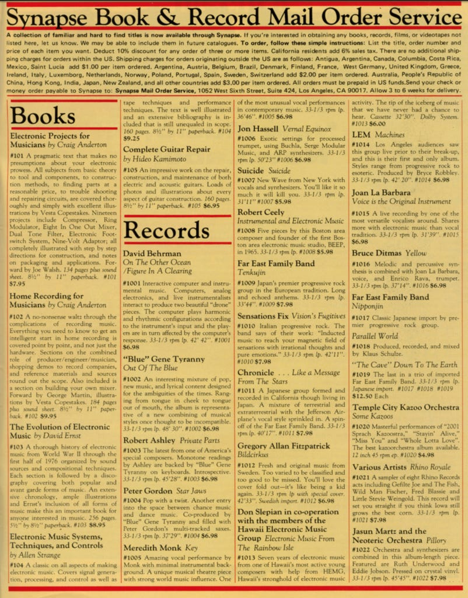

Synapse: la primera revista de música electrónica
Por J.P. Rairan
En el tercer número de Synapse, una revista de mediados de la década
de 1970
dedicada a noticias y reportajes sobre el floreciente campo
de la música
electrónica, los editores Douglas Lynner y Angela Schill
ofrecían una breve
sinopsis del objetivo de su nueva revista:
Nuestro propósito al editar Synapse es proporcionar una fuente de
información, así como brindar un foro que apoye las ideas y el desarrollo de
la música electrónica y campos relacionados.
Fundada en 1976 en North Hollywood y funcionando durante tres años,
Synapse fue un asunto de bajo presupuesto que tenía como objetivo
documentar a los técnicos-fabricantes que estaban impulsando la música
electrónica hacia el futuro. Incluía entrevistas con artistas como Brian Eno,
Herbie Hancock, George Duke, Kraftwerk y Morton Subotnik, la mayoría de
los cuales parecían mareados ante la oportunidad de hablar seriamente sobre
música electrónica en una época en la que la cultura musical estaba
obsesionada con el arena rock, disco, punk. y fusión.
cada pieza es nueva y discordante, escribió el columnista Sam Levine en
Sample & Hold, su columna mensual, sobre los desafíos de evaluar
cualitativamente los nuevos sonidos que surgían en ese momento. “No es
cómodo y familiar. No ha tenido la oportunidad de ser escuchado una y otra
vez para ser realmente bien evaluado. El vocabulario musical es nuevo y aún
no está completamente establecido. Muchas obras nuevas son simplemente
experimentos inspirados en nuevas técnicas descubiertas o nuevos
instrumentos disponibles”. (Neil Young tomó prestado el título "Sample &
Hold" para su pista Trans del mismo nombre).
Miren esta página de reseñas de discos de 1979, que incluye notas sobre "Blue"
Gene Tyranny's Out of the Blue, el debut homónimo de Suicide, Vernal
Equinox de Jon Hassell, Private Parts de Robert Ashley y el primer
lanzamiento, Some Kazoo de Temple City Kazoo Orchestra, de un pequeño
sello llamado Rhino Records, que transformaría el negocio de los archivos y
reformularía la conversación sobre reediciones y colecciones.

Estas secciones de reseñas, de hecho,
ofrecen una fuente de consejos sobre
registros esotéricos para perseguir. Por ejemplo, ¿alguna vez han oído hablar
de Joan La Barbara? No lo había hecho hasta que leí sobre ella en Synapse. La
reseña en cápsula de su “voz como instrumento original” ofrece suficiente
información para despertar gran curiosidad: “Una grabación en vivo de una de
las vocalistas más versátiles que existen. Comparte más con la música
electrónica que con la tradición vocal.” Así fue como me topé con su segundo
álbum, Tapesongs, de 1977. Al escuchar esto, quizás puede sonar un poco atemporal.
Sin embargo, sí se escucha como un experimento vocal -lo cual
es un reto- la experiencia sonora puede ser muy interesante.
Luego está el número de mayo/junio de 1977. Su portada presenta una
ilustración de Robert Moog, suscita entrevistas con Herbie Hancock y George
Duke, y tiene un artículo sobre síntesis vocal que ofrece una especie de guía
para construir su propia caja de voz (vocoder)
Los archivos de Synapse han estado en internet de un lado para otro.
Aquí pueden descargarlos:
Synapse Vol. 1 # 1